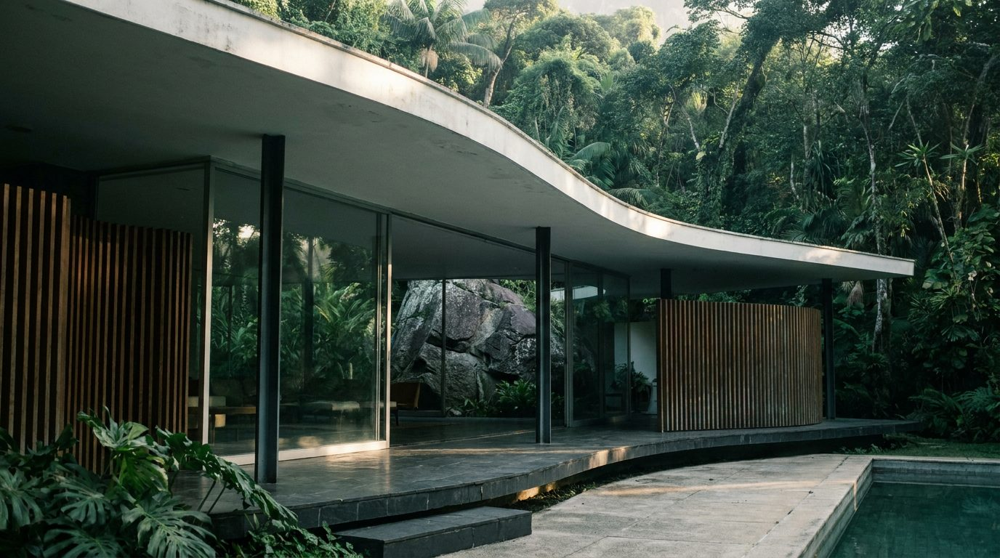
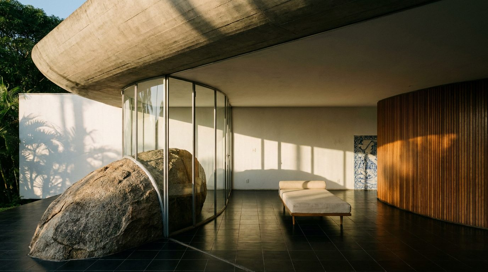

Atlante · INT-BR-02 · Brasile · Sudamerica
Casa carioca con masso in sala, vetrata curva e giardino tropicale
Esempi · esterno e interno


Perché funziona
A Rio il cliente compra la casa-giardino: luce, vegetazione e intimità, non la spiaggia. La casa carioca degli anni Cinquanta è il modello giusto perché unisce vetrata, pietra e brise in un solo gesto e lascia entrare il paesaggio. Per Poetica è la voce che tiene insieme i due registri: regge sia un divano in lana chiara sia un tessuto saturo, perché il fondo è calce e granito. Il made in Italy si legge nella seduta bassa, nella pelle e nel giunto del legno, non nell'oggetto esotico. Da evitare: la casa di Niemeyer ridotta a curva bianca da render, con palme plastiche e amache; il masso e il nero della ceramica devono restare i due poli del set.
Architettura · elementi riproducibili
- soletta curva in cemento a vista spessore 200 mm, sbalzo 2500 mm sul giardino, bordo senza gronda
- vetrata curva continua h 2800 mm, montanti in acciaio 50x50 mm a passo 900 mm
- masso di granito 2400x1800 mm lasciato in opera, attraversa la vetrata e appoggia la scala
- brise verticali in peroba 60x180 mm a passo 120 mm su una sola facciata
- pavimento in ceramica nera 200x200 mm nel padiglione, arenaria 400x400 mm all'esterno
- parete curva rivestita in listelli di legno h 2700 mm a delimitare la zona pranzo
- vasca 8000x3000 mm in cemento a vista, bordo a filo pavimento, acqua scura
Fatto verificato: la Casa das Canoas (Niemeyer, progetto 1951, occupata dal 1953) a São Conrado è un padiglione vetrato su solette curve: un grande masso di granito entra in sala attraverso la vetrata, la soletta aggettante crea fasce d'ombra al posto delle tende e la scala interna si appoggia alla roccia. La partecipazione di Burle Marx al giardino è documentata ma senza progetto ritrovato.
Fatto verificato: la casa è tutelata dall'Inepac dal 1992 e dall'Iphan, con processo aperto nel 2007, delibera nel 2017 e pubblicazione definitiva nel 2021.
Fatto verificato: il Palácio Gustavo Capanema a Rio (progetto 1935-36, costruito 1937-1945), di Lúcio Costa con la squadra e la consulenza di Le Corbusier, è il primo grande edificio modernista pubblico delle Americhe e usa brise-soleil regolabili sulla facciata vetrata, con murale di azulejo e pilotis.
Fatto verificato: il Sítio Roberto Burle Marx a Barra de Guaratiba, avviato nel 1949, è il primo giardino tropicale moderno iscritto nella Lista del Patrimonio Mondiale (2021) e ospita 3500 specie coltivate.
Luce
Prompt di generazione (EN)
Empty living pavilion of a 1950s Rio de Janeiro house, 3.1 m curved concrete slab overhead with a 2.5 m overhang, continuous curved glazing 2.8 m high on steel mullions at 900 mm centres, a granite boulder 2.4 m wide standing inside the room and passing through the glass line, black 200 x 200 mm ceramic floor tiles, lime-washed white walls, a curved wall clad in 60 x 180 mm peroba timber slats, one blue azulejo panel, a single low daybed in undyed linen. One key light: early morning sun from the east at 28 degrees, 5100 K, moving foliage shadows across the lime plaster, deep unlit corners. 24 mm lens, camera at 1.3 m, two-point perspective, verticals parallel, rich green-and-white grade with deep shadow, no people, no text, no logos.